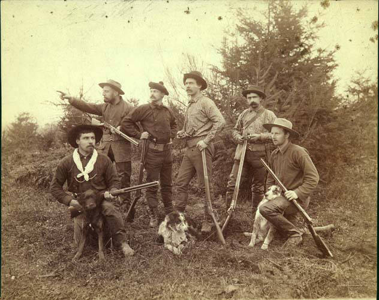

In 1889, Washington's governor issued an open challenge: cross the Olympic Mountains, a range still unmapped and largely unknown even as the rest of the territory filled in around it. The Seattle Press answered, sponsoring an expedition under James H. Christie, a Scottish-born adventurer. Six men, four dogs, and two mules set out that December, into one of the worst winters on record, racing a rival government expedition scheduled for the following summer.

The route north up the Elwha and south down the Quinault took nearly six months. Both mules died along the way. A dog was killed by an elk. The party misnamed a pass, corrected course, and pressed on through snow that swallowed their equipment and their timeline alike. They reached Aberdeen at two in the morning on May 21, 1890, bearded and behind schedule, having done something no one else had.
This race retraces a piece of that ground. They took six months. You have 18 hours.